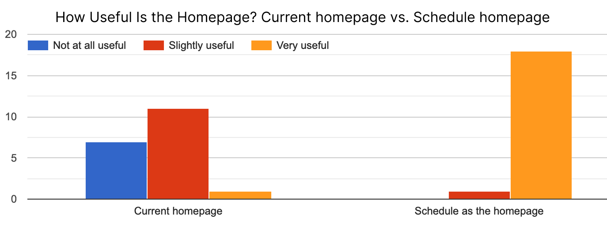

DiscNW Mobile Redesign

Bringing together DiscNW's event discovery and player schedules into one clear, organized experience.
Bringing together DiscNW's event discovery and player schedules into one clear, organized experience.
UX Designer
Aug 2026 - Nov 2026
Mobile Design
Prototyping
Interaction Design
DiscNW is a Seattle-based nonprofit that makes Ultimate accessible and welcoming to players of all backgrounds. As the organization has grown, so has what it offers including leagues, camps, and events for players of every age and skill level.
But the website hasn't kept pace with that growth. Leagues, camps, and events are presented together in long, uniform lists with no clear hierarchy or filtering so players have to search for what is relevant to them. This redesign makes the site easy to use and reflects the same sense of community DiscNW offers.
I interviewed two adult Ultimate players (one captain and one player) one-on-one, asking 10 questions on registration, navigation, and event discovery. These three problems surfaced many times:
Registering took too long. Participants described long paths to sign up, with the important details at the bottom of the page..
The homepage buried what mattered. It led with promotional and general Ultimate content, while personalized, actionable items were hidden further down.
There were many events and few ways to narrow them. The site had no useful filters to help people find the right one.
Simplify registration by combining related steps into one
Lead with what's personal, putting each player's own events before any browsing content.
Organize information with clear headings, sections, and filters.


Organized the homepage instead of removing content. The original homepage had a lot of valuable content, so I kept all of it and focused on structure. The mission, programs, and ways to get involved each got their own section, so someone new to DiscNW or Ultimate can understand who the organization is without being overwhelmed.
Put the schedule first as the homepage. Players mainly want to know when and where their next game is. I made the schedule the first thing they see, with games grouped by date and the details underneath. Returning players no longer have to dig through menus to find their league.
Gave every event type its own section. On the current site, leagues, tournaments, and everything else were in one list. I split them into sections by event type and used hierarchy so the key details (date, location, registration status) stand out instead of getting lost in blocks of text. I also added registration tags (open, closed, upcoming) so players can see what they can sign up for at a glance.
Cut registration down to four steps. I combined related steps and asked only for what’s needed, reducing registration from six steps to four. Fewer steps means fewer chances for people to get stuck or give up halfway.
I tested the interactive prototype with 19 DiscNW players through a survey. Participants explored the schedule, the events page, and the registration flow, then rated each part. All 19 were adult players, most on phones, and most had played with DiscNW for over three years.
"Relevant info is more central. The first thing I see is my schedule."
"It's in the forefront, saves time and clicks."
18 of 19 players rated the schedule as the first screen “very useful,” while 18 of 19 rated the current homepage “not at all” or “slightly” useful. This matched my research. All 19 testers said they come to check their schedule, and 17 to register. Players also found the games easy to read, rating the clarity of game details 4.5 / 5.

Most players come to the site to register, so I focused on reducing the effort.
| What I tested | Result |
|---|---|
| Ease of registration | 4.3 / 5 average |
| Clarity of registration steps | 4.5 / 5 average |
| Prototype registration process compared to the current site | 11 said easier, 7 about the same, 1 harder |
| Number of registration steps: | 15 / 19 said about right |
Testing also showed where the design needs work:
These results come from 19 adult players, mostly returning users, so I can’t say how well the design works for first-time players, parents, or youth. Some prototype buttons weren’t working yet, which affected a few ratings. Next time I’d include newer players and test the browsing flow directly. I’d also write clearer survey questions and ask about one thing at a time.
This project taught me that good design is often about organizing information well. DiscNW already had the content people needed. The biggest gains came from deciding what to put first and removing extra steps. Next time I’d pair surveys with facilitated usability tests, so I can watch people use the prototype and see where they hesitate.